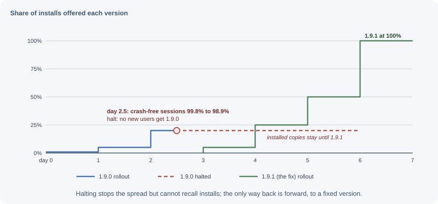
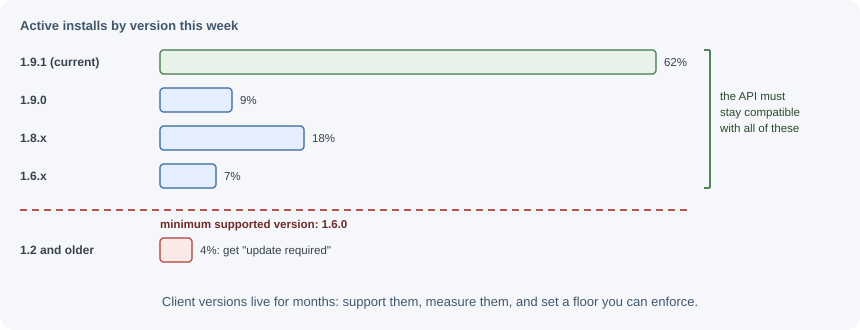

Releasing Desktop and Mobile Apps¶
Server software runs on machines you control: you deploy, and minutes later every user runs the new version. Desktop and mobile apps run on machines your users control: they install when they choose, sometimes never, and every version you ever shipped may still be running somewhere. Releasing client software therefore needs its own techniques: code signing so operating systems trust the app, auto-update systems that verify what they install, channels and staged rollouts, minimum supported versions, APIs that keep old clients working, app store review, and crash reporting by release.
This lesson covers those techniques at a practical level, using a TaskFlow desktop app (built with Tauri) and TaskFlow mobile apps as examples.
Why it matters¶
Three properties make client releases riskier than server releases:
- No rollback. Once a version is installed, you cannot remove it from users' devices. A halted rollout stops new installs; it does not undo existing ones. The only fix is a newer version, or a remote switch built into the app beforehand.
- Old versions live forever. Some users disable updates, some devices cannot run the latest OS, and enterprise customers pin versions. Your API serves many client versions at once, for months or years.
- Slow fixes. A server hotfix ships in minutes. A mobile fix waits for store review and for users to update; even after the fix is approved, it reaches users over days.
The CrowdStrike incident of July 2024 shows the scale of the problem: a content update pushed to Windows endpoints crashed machines worldwide, and because the affected machines could not boot normally, they could not receive a fix automatically either. Its root cause analysis committed to staged deployment through rings with canary testing. Client software that updates itself is a deployment system and needs the same safety as a server pipeline.
Real-world usage¶
- Apple App Store phased release. Apple's documentation on releasing a version update in phases describes a 7-day schedule (1%, 2%, 5%, 10%, 20%, 50%, then 100% of users with automatic updates), pausing for up to 30 days in total, and notes that anyone can still download the update manually from the App Store during the phase.
- Google Play staged rollouts. Google's staged rollout documentation says you choose the percentage of users who receive an update, that it never increases automatically, that halting stops further users from getting it while users who already have it keep it, and that staged rollouts apply to updates, not first releases.
- Tauri updater. The Tauri updater plugin requires every update to be signed ("This cannot be disabled"), embeds the public key in the app, and warns that losing the private key means you can no longer publish updates to existing installs.
- Apple notarization. Apple's guide to notarizing macOS software before distribution explains that software distributed outside the Mac App Store with a Developer ID is submitted to Apple's notary service, and that Gatekeeper checks for the notarization ticket before first launch.
- Sentry release health. Sentry's release health documentation describes tracking crash-free sessions and users per release, the signal most teams use to decide whether to continue or halt a client rollout.
Popular tools and providers: Tauri updater, electron-updater (electron-builder), Squirrel.Windows, Sparkle (macOS), MSIX and the Microsoft Store, App Store Connect and TestFlight, Google Play Console and its testing tracks, Firebase App Distribution, fastlane, and crash reporting with Sentry or Firebase Crashlytics.
How it works¶
Why client releases differ¶
| Server | Desktop or mobile client | |
|---|---|---|
| Who installs | You | The user, or the OS on their behalf |
| Time to reach 100% | Minutes | Days to never |
| Rollback | Redeploy the previous version | Impossible for installed copies; ship a newer one |
| Versions running at once | One or two | Dozens |
| Gatekeepers | Your pipeline | OS trust (signing), app store review |
| Configuration changes | Instant | Only through remote config built into the app |
| Observability | Logs and metrics you own | Crash reports and analytics the app sends |
Code signing¶
Code signing proves who published a binary and that it has not been changed since. Operating systems warn about or block unsigned software.
- Windows (Authenticode). Executables and installers are signed with a
code signing certificate using
signtool. Always add a timestamp from a timestamping service, so the signature stays valid after the certificate expires. Since mid-2023, the CA/Browser Forum's code signing requirements mean the private keys of publicly trusted code signing certificates must be kept in hardware (a token or a hardware security module, including cloud HSM signing services), so CI pipelines sign through such a service rather than a key file. Microsoft Defender SmartScreen also uses reputation, so a new certificate or a new file may still show warnings until reputation builds. - macOS. Apps distributed outside the Mac App Store are signed with a
Developer ID certificate, built with the hardened runtime,
notarized by Apple's notary service (
xcrun notarytool), and the ticket is stapled to the app or disk image (xcrun stapler) so Gatekeeper can verify it offline. - iOS and Android. Store apps are always signed. iOS uses Apple-issued certificates and provisioning profiles; Android apps are signed with an app signing key, which with Play App Signing is managed by Google while you sign uploads with a separate upload key.
- Linux. Packages in apt or rpm repositories are verified through the repository's signing key; formats such as Flatpak and Snap have their own signing models.
Signing keys are among the most sensitive secrets a company has: anyone holding them can ship software your users' machines will trust. See secrets management.
Auto-update architecture¶
![Diagram: the installed app on version 1.8.0 sends its platform, architecture, version, channel, and an anonymous install ID to the update server; the server checks for a newer version on the channel, that the rollout is not halted, and that the install ID falls inside the rollout percentage, then returns a manifest with version 1.9.0, URL, signature, and notes, or 204 if there is no update; the app downloads the installer from a CDN, verifies the signature with the public key built into the app and discards the file on a mismatch, installs on quit or after a prompt, relaunches as 1.9.0, and reports its version and crash-free sessions back.](../auto-update-sequence.svg)
The parts:
- Update manifest: a small document (JSON or YAML) per channel and platform listing the latest version, download URL, signature or hash, release notes, and optionally a rollout percentage. It can be a static file on a CDN or computed per request by an update server.
- Signature verification: the app embeds an update-signing public key and refuses any download whose signature does not verify. This is separate from OS code signing and protects against a compromised CDN or update server.
- Download and install: in the background where possible, applied on restart, with a prompt for large or disruptive updates.
- Channels:
stable,beta, and sometimesnightlyorcanary. Users or administrators choose; staff run beta. Chrome's Stable, Beta, Dev, and Canary channels are the best-known example of this model. - Reporting: the app reports its version (anonymously) so you know the version distribution and can measure crash rates per release.
Tauri, electron-updater, Sparkle, and Squirrel all implement this shape with different file formats. Updater design in depth (static manifests versus update servers, signing-key rotation, delta updates, cohort rollouts and roll-forward, over-the-air JavaScript updates, and service workers for web apps) is covered in update mechanisms and updaters.
Staged rollouts and halting¶

A staged rollout offers a new version to a growing share of installs.
App stores provide it (Apple's phased release, Google Play's staged
rollouts); for desktop apps the update server or manifest provides it
(electron-updater reads a stagingPercentage field; a custom update
server can bucket install IDs exactly like a feature flag).
Typical gates between stages: crash-free sessions and users for the new release compared with the previous one, error rates of API calls made by that version, and support tickets. When a gate fails:
- Halt the rollout so no new users receive the version.
- Mitigate with remote configuration: turn off the broken feature by flag for that app version.
- Ship a fix forward and roll it out, often faster, to replace the bad version where it landed.
Minimum supported version and forced updates¶
Every API call from a client should carry its platform and version (for
example X-Client-Platform: desktop and X-Client-Version: 1.8.0). That
gives you the version distribution and a way to enforce a floor:

- Soft update: the app shows a banner suggesting the update.
- Hard (forced) update: below the minimum version, the API returns a specific error and the app shows a blocking "please update" screen. On Android, Google Play's in-app updates API offers an "immediate" flow for this; on iOS the app links to its App Store page.
- Raise the floor carefully: only after the old version's usage is small, with notice, and never as a substitute for keeping APIs compatible. Forcing an update that the store has not yet approved, or that some OS versions cannot install, locks users out.
Minimum and recommended versions, contract tests for every supported client release, and support windows are covered in more depth in keeping frontend and backend in sync.
Backward-compatible APIs for old clients¶
Because many client versions call the API at once:
- Add fields; do not remove or rename them while supported clients use them. Make clients ignore unknown fields and unknown enum values.
- Version breaking changes and serve old versions from the same code (see pinned-version clients in advanced deployment patterns).
- Ship server support first, then the client that uses it; never the other way round.
- Keep server-side switches for client features, so a broken feature in an installed version can be disabled remotely.
App store review and phased release¶
- Review. Both Apple and Google review submissions, so a release cannot be shipped at a moment of your choosing; build review time into plans. Apple offers expedited review requests for critical fixes.
- Testing tracks. TestFlight (iOS) and Google Play's internal, closed, and open testing tracks give staff and beta users builds before production, the client equivalent of rings.
- Phased release. Use Apple's 7-day phased release and Play's staged rollouts for every production update, and watch crash rates at each step.
- Release timing. Submitting early in the week leaves time to react before a weekend.
Crash reporting by release¶
Crash and error reporting must be tagged with the release (version and build number) so you can compare releases:
- Crash-free sessions and crash-free users per release are the main health signals.
- Symbols must be uploaded for each build (dSYM files for Apple platforms, R8/ProGuard mapping files for Android, source maps for JavaScript, PDB files for Windows), or stack traces are unreadable.
- New issues that appear only in the new release point at the change.
- Gates: promote the rollout only if crash-free sessions for the new release are at least as good as the previous release's.
When to use and when not to use¶
| Situation | Approach |
|---|---|
| Consumer mobile app | Store phased release or staged rollout on every update, remote flags for risky features, a minimum version for emergencies |
| Desktop app distributed directly | Signed builds, a signed auto-update manifest, beta and stable channels, server-side percentage rollout |
| Enterprise desktop deployments | Let administrators control versions (MSI or MSIX with management tools), support pinned versions longer, communicate deprecations |
| Internal tool used by a few staff | A simple signed auto-update to everyone may be enough |
| Critical security fix | Expedited review or accelerated rollout, but still in fast stages if possible; consider raising the minimum version |
Avoid forced updates as a routine tool, and avoid shipping a client that depends on a server change that is not yet live.
Practical examples¶
Tauri: updater configuration¶
{
"bundle": {
"createUpdaterArtifacts": true
},
"plugins": {
"updater": {
"pubkey": "<contents of the public key file, not a path>",
"endpoints": [
"https://updates.taskflow.example.com/desktop/{{target}}/{{arch}}/{{current_version}}"
]
}
}
}
These are the relevant parts of src-tauri/tauri.conf.json.
createUpdaterArtifacts makes the bundler produce update packages and
their .sig files. The private key is generated once with the Tauri
CLI's signer generate command and provided to the build through the
TAURI_SIGNING_PRIVATE_KEY environment variable (and
TAURI_SIGNING_PRIVATE_KEY_PASSWORD) from the CI secret store; the Tauri
docs note that .env files do not work for this.
Tauri: checking for updates in the app¶
// src/updater.js: check, download, verify, install, relaunch
import { check } from "@tauri-apps/plugin-updater";
import { relaunch } from "@tauri-apps/plugin-process";
export async function updateIfAvailable(installId) {
const update = await check({ headers: { "X-Install-Id": installId } });
if (!update) return false; // server answered 204: nothing to do
let downloaded = 0;
await update.downloadAndInstall((event) => {
if (event.event === "Progress") downloaded += event.data.chunkLength;
}); // the plugin verifies the signature before installing
await relaunch();
return true;
}
An update server with staged rollout and halt¶
// src/update-server.js: returns an update manifest or 204
import express from "express";
import semver from "semver";
import { createHash } from "node:crypto";
// In practice this comes from a database or a release config file
const release = {
version: "1.9.1",
notes: "Fixes a crash when opening large boards.",
pubDate: "2026-11-12T09:00:00Z",
rolloutPercent: 25, // raise in steps: 1, 5, 25, 50, 100
halted: false, // set true to stop offering this version
minVersion: "1.6.0", // older installs always get the update
assets: {
"windows-x86_64": { url: "https://downloads.taskflow.example.com/1.9.1/TaskFlow_1.9.1_x64-setup.exe", signature: "<contents of the .sig file>" },
"darwin-aarch64": { url: "https://downloads.taskflow.example.com/1.9.1/TaskFlow.app.tar.gz", signature: "<contents of the .sig file>" },
},
};
function inRollout(installId, percent) {
const n = createHash("sha256").update(`desktop-${release.version}:${installId}`).digest().readUInt32BE(0);
return n % 10_000 < percent * 100;
}
const app = express();
app.get("/desktop/:target/:arch/:currentVersion", (req, res) => {
const { target, arch, currentVersion } = req.params;
const asset = release.assets[`${target}-${arch}`];
const installId = req.get("X-Install-Id");
if (!asset || !semver.valid(currentVersion)) return res.status(204).end();
if (!semver.gt(release.version, currentVersion)) return res.status(204).end();
const belowFloor = semver.lt(currentVersion, release.minVersion);
const offered = !release.halted && installId && inRollout(installId, release.rolloutPercent);
if (!belowFloor && !offered) return res.status(204).end();
res.json({
version: release.version,
notes: release.notes,
pub_date: release.pubDate,
url: asset.url,
signature: asset.signature,
});
});
app.listen(Number(process.env.PORT ?? 3001));
The target and arch values come from the Tauri endpoint template.
Because buckets depend on the install ID and the version, each release
picks a different subset of users, and raising the percentage only adds
installs. Halting is one field change, with no new build.
Enforcing a minimum client version in the API¶
// src/middleware/min-client-version.js
import semver from "semver";
const MIN_VERSION = { desktop: "1.6.0", ios: "3.0.0", android: "3.0.0" };
export function minClientVersion(req, res, next) {
const platform = req.get("X-Client-Platform");
const version = req.get("X-Client-Version");
const min = MIN_VERSION[platform];
if (min && semver.valid(version) && semver.lt(version, min)) {
return res.status(426).json({
error: "client_update_required",
message: "This version of TaskFlow is no longer supported. Please update.",
minVersion: min,
});
}
next();
}
HTTP 426 Upgrade Required was defined for protocol upgrades; many APIs reuse it for this purpose, others use a 400-class status with an error code. What matters is a stable, documented error that every client version knows how to show.
Signing and notarizing a macOS build in CI¶
#!/usr/bin/env bash
# scripts/sign-macos.sh: sign with Developer ID, notarize, staple, verify
set -euo pipefail
APP="TaskFlow.app"
IDENTITY="Developer ID Application: Example Ltd (TEAMID1234)"
# Nested frameworks and helpers must be signed first (inside out); Tauri and
# Electron packaging tools do that before this step.
codesign --force --options runtime --timestamp --sign "$IDENTITY" "$APP"
ditto -c -k --keepParent "$APP" TaskFlow.zip
# Credentials were stored earlier with: xcrun notarytool store-credentials taskflow-notary ...
xcrun notarytool submit TaskFlow.zip --keychain-profile "taskflow-notary" --wait
xcrun stapler staple "$APP"
spctl --assess --type execute --verbose "$APP"
--options runtime enables the hardened runtime required for
notarization, and --wait makes the script fail if Apple rejects the
submission. Signing tools for Tauri and Electron can run these steps for
you when given the same credentials.
Signing a Windows installer¶
signtool sign /fd SHA256 /td SHA256 /tr "<timestamp-server-url>" /n "Example Ltd" TaskFlowSetup.exe
signtool verify /pa /v TaskFlowSetup.exe
/tr adds an RFC 3161 timestamp from your certificate authority's
timestamping service and /td its digest algorithm; /n selects the
certificate by subject name from the store, which is where hardware
tokens and cloud signing services surface the key.
Staged store releases with fastlane¶
# fastlane/Fastfile
lane :android_release do
upload_to_play_store(track: "production", rollout: "0.05") # 5% of users
end
lane :ios_release do
upload_to_app_store(submit_for_review: true, phased_release: true)
end
The Play rollout is raised later from the Play Console or another
upload_to_play_store call with a higher rollout; the App Store phased
release then follows Apple's 7-day schedule automatically once approved.
Best practices¶
- Sign everything, with timestamps, using keys held in hardware or a managed signing service; protect update-signing keys as top secrets and back them up securely.
- Verify update signatures in the app with an embedded public key.
- Offer channels (beta, stable) and use staged rollouts for every production release.
- Gate rollout steps on crash-free sessions per release; upload symbols for every build.
- Send client platform and version on every API call; watch the version distribution.
- Keep APIs backward compatible for every supported client version; ship server changes before the clients that need them.
- Build remote kill switches into the app for risky features.
- Set and enforce a minimum supported version for emergencies, with notice.
- Plan for store review time; submit early in the week.
In production¶
- A bad version is out and cannot be recalled. Detect: crash-free sessions for the new release drop; crash reports share one stack trace. Cause: a defect that testing missed, now on installed devices. Fix: halt the rollout, disable the feature with a remote flag, and ship a fix forward through an expedited review.
- Users see "unknown publisher" or Gatekeeper blocks the app. Detect: support tickets and install funnel drop after a release. Cause: signing or notarization failed or was skipped, or the certificate expired without a timestamp. Fix: fail the build when signing or notarization fails, always timestamp, and track certificate expiry.
- Auto-update stopped working for everyone. Detect: the version distribution freezes; update checks return errors or signature failures. Cause: the update-signing key was rotated or lost, or the manifest URL changed. Fix: treat the public key and endpoint as long-term contracts; ship key rotation as a normal update signed with the old key, well before it is needed.
- An API change broke older apps. Detect: errors from specific client versions in API logs right after a server deploy. Cause: a removed field or new required parameter. Fix: revert the server change, keep the API compatible with supported versions, and add contract tests per supported client version.
- Forced update locked out part of the user base. Detect: sessions from some OS versions fall to zero. Cause: the new minimum version requires an OS those devices cannot run. Fix: check OS support before raising the floor and offer a degraded mode instead of a hard block.
- Crash reports are unreadable. Detect: stack traces with memory addresses or minified names. Cause: symbols, mapping files, or source maps were not uploaded for that build. Fix: upload them in the release pipeline and fail the release if they are missing.
Important terminology¶
- Code signing: a cryptographic signature that identifies the publisher and proves the binary is unchanged.
- Timestamping: recording when a signature was made so it stays valid after the certificate expires.
- Notarization: Apple's automated check of Developer ID software, producing a ticket Gatekeeper trusts.
- Update manifest: the document that tells clients which version is available and where to get it.
- Update channel: a release stream such as stable or beta.
- Staged (phased) rollout: offering an update to a growing share of users.
- Halt: stopping a rollout so no further users receive it.
- Minimum supported version: the oldest client version the service still accepts.
- Forced update: blocking use until the user updates.
- Crash-free sessions: the share of app sessions that did not crash, per release.
- Symbols: files that map compiled code back to source for readable crash reports.
Common mistakes and misconceptions¶
- Assuming a halted rollout removes the bad version from devices.
- Shipping a client that needs a server change before that change is live.
- Removing API fields because "the new app does not use them".
- Keeping the update-signing private key on a laptop, or in a
.envfile in the repository. - Skipping timestamps when signing.
- Raising the minimum version without checking who it locks out.
- Releasing without uploading symbols, then being unable to debug the crash spike.
- Treating client configuration and content pushes as harmless; they are releases too.
Revision questions¶
- Why can a client release not be rolled back the way a server release can, and what are the alternatives?
- What do code signing, timestamping, and notarization each protect against?
- Why should an app verify update signatures even when downloads use HTTPS?
- With Apple's phased release, what share of automatic-update users has the update after day 3, and can other users still get it?
- A desktop rollout uses buckets 0 to 9,999. At 25%, which buckets get the update? What happens to installs in buckets 2,500 to 9,999 if the rollout is halted?
- When should you raise the minimum supported version, and what must you check first?
- Which signals should gate each step of a client rollout?
- Why must API changes be deployed before the client versions that use them?
Further learning¶
- Tauri: Updater plugin
- Apple: Release a version update in phases
- Google Play: Release app updates with staged rollouts
- Apple: Notarizing macOS software before distribution
- Microsoft: SignTool
- Android: In-app updates
- Sentry: Release health
- Next: deployment strategies interview questions and answers. Back to the deployment strategies overview.